Apple Lightning
Created on 1.7.20
Here's my little article about (almost) everything I know about Apple Lightning and related technologies: Tristar, Hydra, HiFive, SDQ, IDBUS and etc. But first a tiny warning...
Read this article on your own risk! The information in this artcile is based on a lot of AppleInternal materials (leaked datasheets, schematics, source codes) I read in a diagonal direction. And of course on my own research too. I have to warn you, the reader, that I have never done such a research before. Thus, this write-up might use incorrect or just weird terms and turn out partially or completely wrong!
Before going deeper, let's briefly sort out the terms:
What's Lightning?
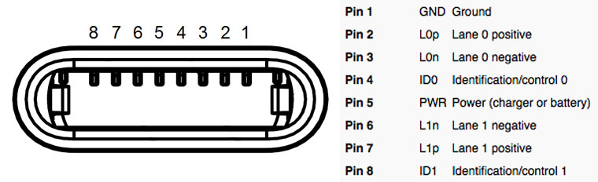Lightning - is a digital interface used in most of the Apple's iOS devices since late 2012. Replaced the old 30-pin connector
You can see the female port pinout on the picture above and the connector pinout on the picture below:
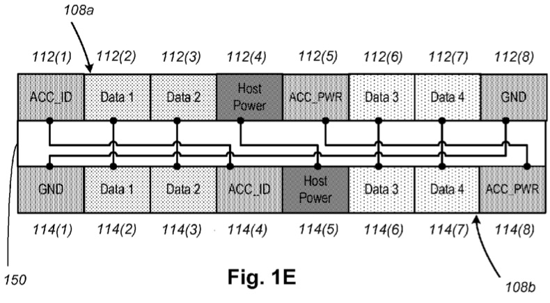
Please pay attention to the fact that in the connector, pins on both sides of connector aren't wired in exact same order. Thus, a host device have to detect orientation of a cable before doing anything else
Though it's not always applicable. Many Lightning accessories I've played with have mirrored pinouts in their connectors
What're Tristar and Hydra?
Tristar - is the integrated circuit embedded in every device shipped with Lightning female port. Basically, it's a MUX:
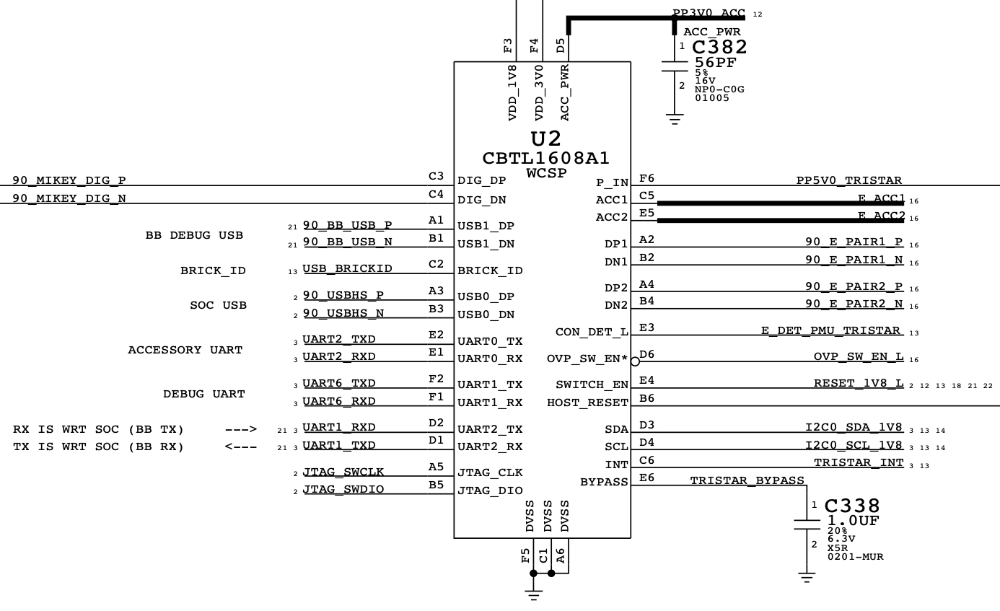 Among many other things, its main purpose is to communicate with Lightning male connector once one was connected - detect orientation and detect Accessory ID and route internal interfaces like USB, UART and SWD accordingly
Hydra - is the new variant of Tristar used since iPhone 8/X. The most significant change appears to be a support of wireless charging, but that's to be verified:
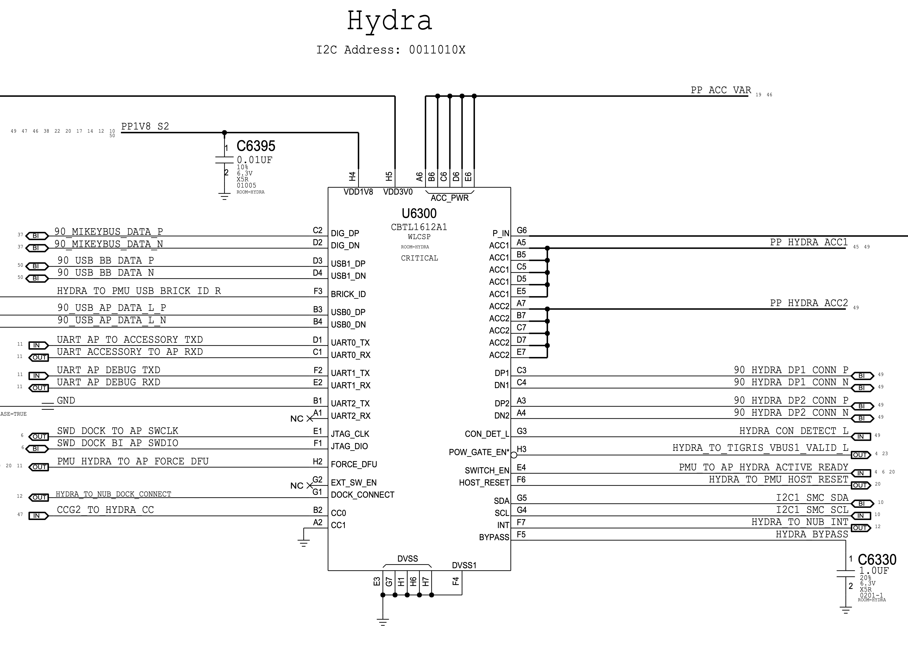
There're 5 major Tristar/Hydra variants known to me:
- TI THS7383 - first-gen Tristar used in iPad mini 1 and iPad 4
- NXP CBTL1608A1 - first-gen Tristar used in iPhone 5 and iPod touch 5
- NXP CBTL1609A1 - mysterious first-gen Tristar used in iPod nano 7 - source
- NXP CBTL1610Ax - second-gen Tristar used since iPhone 5C/5S and apparently everything else that doesn't support wireless charging. There're multiple generations of this one (x - number of generation)
- NXP CBTL1612Ax - Hydra used since iPhone 8/X and apparently everything else that supports wireless charging (x - number of generation)
What's HiFive?
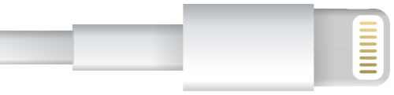HiFive - is Lightning slave, i.e. a male connector. It contains a logical element as well - that chip is known as SN2025/BQ2025
What're SDQ and IDBUS?
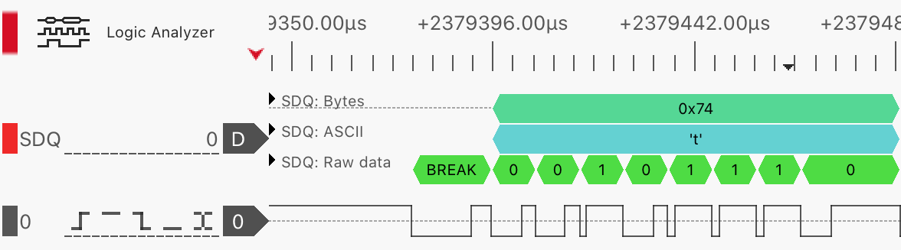These 2 terms are often referred as kind of synonyms. For convinience, I'll only use term IDBUS from now on, as it seems more correct to me (and that's how this technology called in the THS7383 datasheet)
So, IDBUS - is a digital protocol used for negotiations between Tristar and HiFive. Very similar to Onewire protocol
Now we can play
Let's sniff the negotiations between Tristar and HiFive. Take a logic analyzer, a Lightning male-to-female passthrough breakout board, some accessory (normal Lightning to USB cable would fit just fine) and of course some device with Lightning portFirst connect logic analyzer's channels to both ID lines of the breakout (pins 4 and 8) and connect the breakout to the device, but do not connect the accessory just yet:
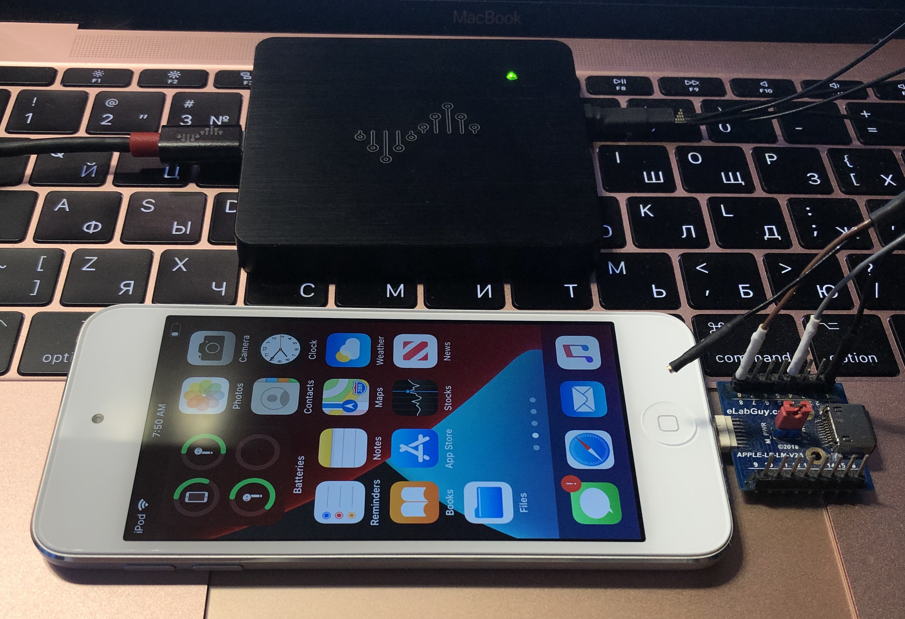
Right after that start sampling (any rate from 2 MHz and up should be fine). You'll see something like this:
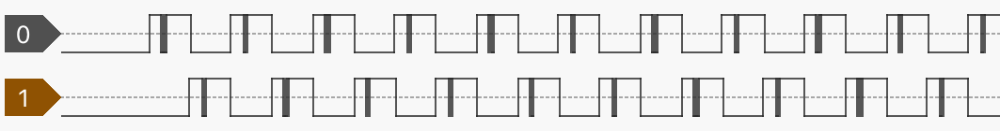
As you can see, Tristar polls each ID line by rotation - one after another. But since we didn't connect any accessory, the polling obviously fails. At some point the device will grow tired of this endless stream of failures and stop it. Meanwhile let's examine what exactly happens while polling:
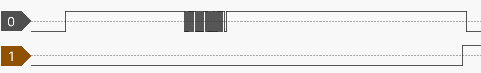
First, we can see a long interval (~1.1 milliseconds) when the level is just high and nothing else is happening:
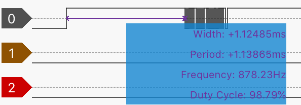
Apparently that time is used to charge internal HiFive's capacitor - the energy from it will be then used to power-up its internal logic chips
What happens next is far more interesting:
Obviously, that's some data flowing. But how to interpret it? How to decode it? Let's virtually split it to almost the least least significant parts - to something that I call words:

So basically a word is a combination of fall-rise-fall:
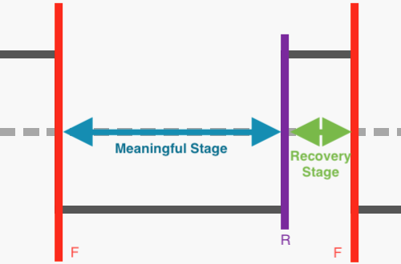
- Meaningful Stage - time interval taken by this stage defines meaning of a word
- Recovery Stage - time interval which is apparently required for processing the Meaningful Stage on recieving side and/or preparing the next word on sending stage
| Meaningful | Recovery | ||||
|---|---|---|---|---|---|
| Word | Min | Typ | Max | Min | Typ |
| BREAK | 12 | 14 | 16 | 2.5 | 4.5 |
| WAKE | 22 | 24 | 27 | 1100? | |
| ZERO | 6 | 7 | 8 | 3 | |
| ONE | 1 | 1.7 | 2.5 | 8.5 | |
| ZERO with STOP* | 6 | 7 | 8 | 16 | |
| ONE with STOP* | 1 | 1.7 | 2.5 | 21 | |
* - STOP is used when it's a last bit in a byte
Using the above table we can now build a simple decoder of the protocol:
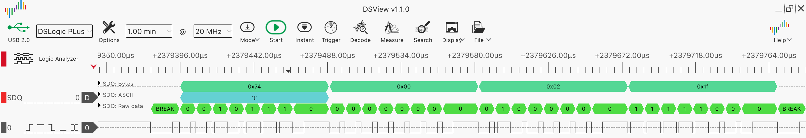
As you can see, the first word a host sends is BREAK - when Tristar wants to send a new request, it always starts with it. Then comes a data stage. Please pay attention to the fact that last (8th) bit of a byte has longer Recovery Stage. When a data stage is over, a host sends another BREAK. Then a slave must send a reply (after at least a 2.5 us delay - see the table). Tristar will wait for around 2.2 ms for a reply. If it's not issued in this time interval, Tristar will try to poll another ID line
Now let's examine the data stage on the example above - 0x74 0x00 0x02 0x1f:
- 0x74 - request/response type. Always even for request, always odd for response (request type + 1)
- 0x00 0x02 - actual data. Can be empty
- 0x1f - CRC8 of both the request type byte and the whole data (polynomial - 0x31, initial value - 0xff)
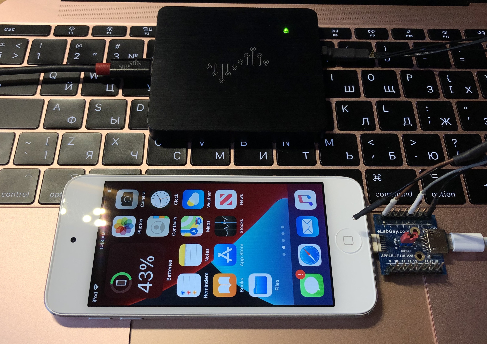
And here is what appears on IDBUS after a 0x74 request:
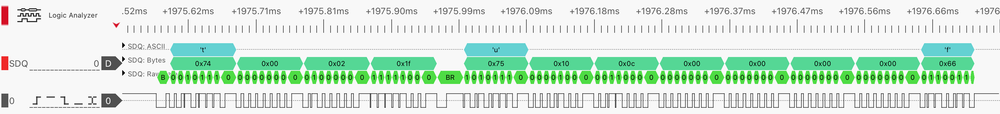
HiFive replied! And if you scroll further you'll see a lot of other request/response pairs:
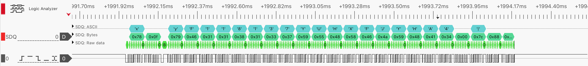
Some requests do not need a response though: 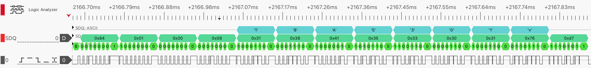
Interpreting IDBUS requests and responses
The most important IDBUS request is 0x74 - it is used for two purposes: to tell HiFive enable full current (in case that's supported by an accessory) and to ask it about pin configuration the cable supports and some other metadataNot too much is known about how response 0x75's data is encoded. But some bits were available in a certain old Tristar datasheet:
| 7 | 6 | 5 | 4 | 3 | 2 | 1 | 0 |
|---|---|---|---|---|---|---|---|
| ACCx | Dx | DATA[43:40] | |||||
| ACCx[1:0] | ACC1 | ACC2 | HOST_RESET |
|---|---|---|---|
| 00 | Hi-Z (IDBUS) | Hi-Z | Hi-Z |
| 01 | UART1_RX | UART1_TX | Hi-Z |
| 10 | JTAG_DIO | JTAG_CLK | Hi-Z |
| 11 | Hi-Z | Hi-Z | HIGH |
| ACCx[1:0] | ACC1 | ACC2 | HOST_RESET |
|---|---|---|---|
| 00 | Hi-Z | Hi-Z (IDBUS) | Hi-Z |
| 01 | UART1_RX | UART1_TX | Hi-Z |
| 10 | JTAG_DIO | JTAG_CLK | Hi-Z |
| 11 | Hi-Z | Hi-Z | HIGH |
| Dx[1:0] | DP1 | DN1 | DP2 | DN2 |
|---|---|---|---|---|
| 00 | Hi-Z | Hi-Z | Hi-Z | Hi-Z |
| 01 | USB0_DP | USB0_DN | Hi-Z | Hi-Z |
| 10 | USB0_DP | USB0_DN | UART1_TX | UART1_RX |
| 11 | Hi-Z | Hi-Z | Hi-Z | Hi-Z |
| Dx[1:0] | DP1 | DN1 | DP2 | DN2 |
|---|---|---|---|---|
| 00 | Hi-Z | Hi-Z | Hi-Z | Hi-Z |
| 01 | Hi-Z | Hi-Z | USB0_DP | USB0_DN |
| 10 | USB0_DP | USB0_DN | UART1_TX | UART1_RX |
| 11 | Hi-Z | Hi-Z | Hi-Z | Hi-Z |
Using the tables above let's decode our cable's ID (10 0C 00 00 00 00) with keeping in mind that ID line was found on ID0 pin:
| 7 | 6 | 5 | 4 | 3 | 2 | 1 | 0 |
|---|---|---|---|---|---|---|---|
| ACCx | Dx | DATA[43:40] | |||||
| 0 | 0 | 0 | 1 | 0 | 0 | 0 | 0 |
So, ACCx is 00 meaning that ID0 pin will just stick with IDBUS, and Dx is 01 meaning that DP1/DN1 pins will be configured as USB0_DP/USB0_DN. Just what we expected from a standard USB cable
Now let's sniff something more interesting:
| Accessory | ID (HOSTID = 1) |
|---|---|
| DCSD | 20 00 00 00 00 00 |
| KongSWD (no Astris running) | 20 02 00 00 00 00 |
| KongSWD (with Astris running) | A0 00 00 00 00 00 |
| KanziSWD (no Astris running) | 20 0E 00 00 00 00 |
| KanziSWD (with Astris running) | A0 0C 00 00 00 00 |
| Haywire (HDMI) | 0B F0 00 00 00 00 |
| UART Charge | 20 00 10 00 00 00 |
| Lightning to 3.5 mm/EarPods with Lightning | 04 F1 00 00 00 00 |
Here's a full (?) list of IDBUS requests provided by @spbdimka:
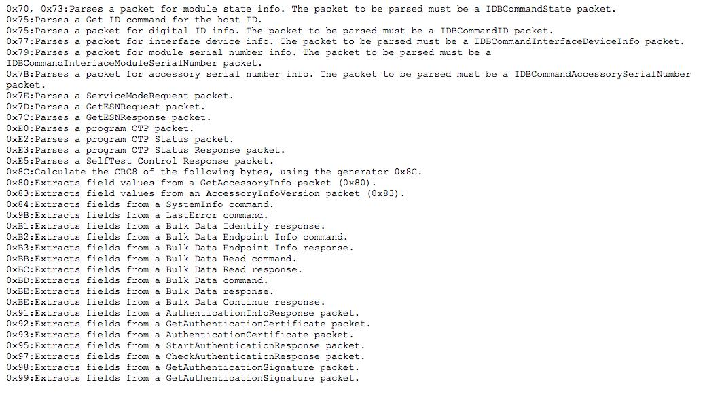 Tip #1: you can easily get accessory's properties including its ID using accctl: 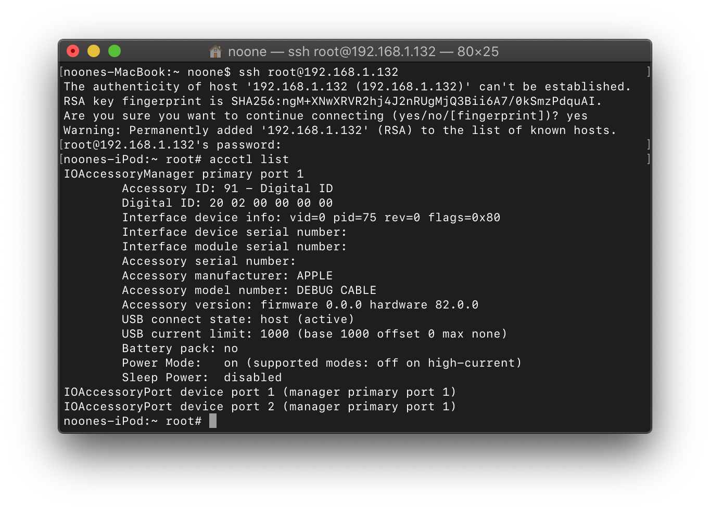
That's an Apple's internal utility shipped with NonUI/InternalUI builds. But you can easily run it on any jailbroken device
Tip #2: you can easily get cable's pin configuration with diags:
tristar -p
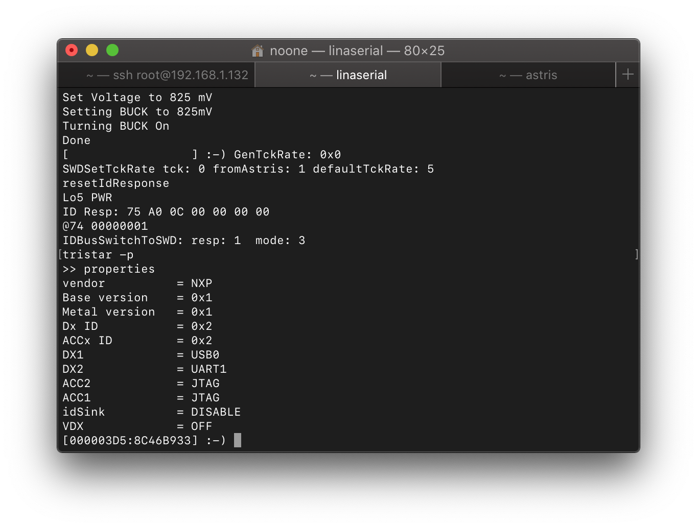Please note that this command is only available on iOS 7+ diags
Tip #3: you can easily track 0x74/0x75 requests/responses generated by SWD-probes by setting debug env var to 3:
astrisctl setenv debug 3
Then, on cable's virtual COM you'll see something like this: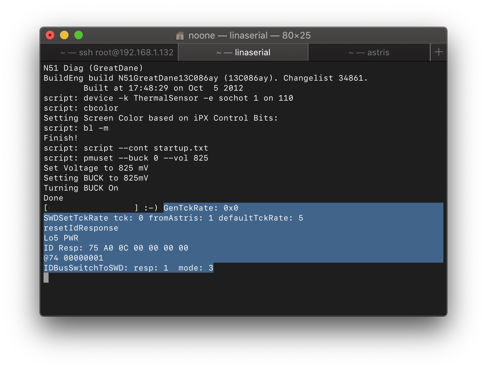
HOSTID
In one of the tables above you could see a mention of a thing called HOSTID. It's a 16-bit value carried in a 0x74 request. It appears that it might affect to a response HiFive will reply with. At least, if you set it to invalid value (yes, it's possible with diags), HiFive might stop working with it: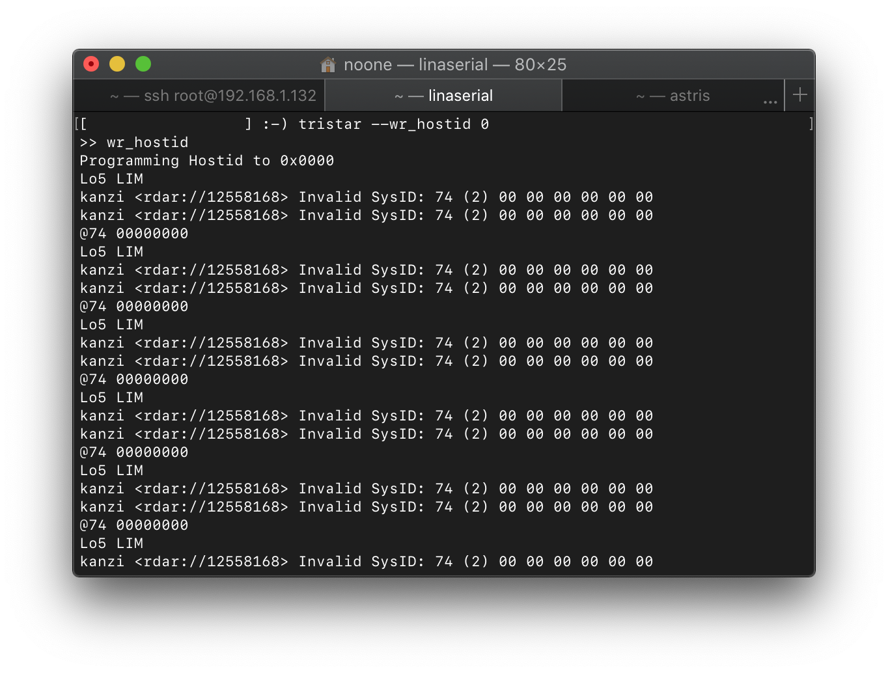
Though there's an environmental variable called disableIdCheck in KongSWD/KanziSWD' firmware you can set to make your probe ignore invalid HOSTID
Important note: Kong and Kanzi do not feature HiFive as a dedicated unreprogrammable chip. Instead these accessories emulate it using microcontroller and/or FPGA unit, thus easily updatable/reprogrammable
WAKE
In the table of Accessory IDs you could see above you could notice that Kong and Kanzi send different responses depending on whether Astris (AppleInternal software designed for debugging with SWD-probes) is launched or not. If you decode those responses using the tables above, you'll find out that when Astris is not launched, a probe will act just like DCSD - USB on D1 and debug UART on D2 lines. But when the debugging software is running, ACCID lines are switched to SWDBut what if we want to launch Astris after a probe was already connected to a device? What will a cable do? How will it switch ACC lines to SWD? That's where WAKE breaks into the game! HiFive (or a device that emulates it) can initiate WAKE and IDBUS enumeration process will start again - Tristar will send 0x74 request, Kong/Kanzi will reply with new ID, Tristar will acknowledge that and route ACC lines to internal SWD lines (SoC must have Development fusing or be demoted for SWD to actually work, of course)
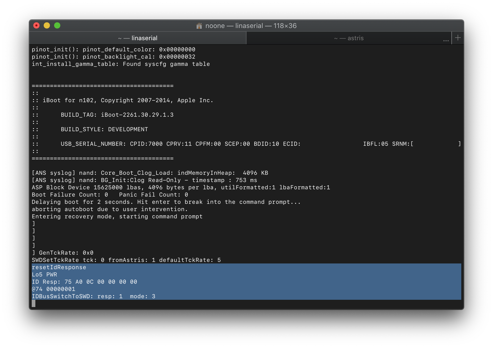
Power Handshakes
The last thing I'm going to cover in this chapter is Power Handshakes. That's an algorithm based on IDBUS requests/responses that kernel Tristar drivers use before allowing charging from an accessoryWhen a Lightning cable is just lying somewhere connected to a charger/computer, but not connected to a device, HiFive limits current on the PWR to a really small value (around 10-15 mA according to my measurements). To enable full current, 0x74 request must be issued by Tristar and processed by HiFive. For SecureROM/iBoot that's enough, but when a kernel is booted additional steps are to be made:
- Tristar issues 2 0x70 requests
- As soon as the second one is processed by HiFive and a reply is sent, it disables current at all for around 20 milliseconds
- After this time is elapsed, Tristar issues another 0x70 request but with 0x80 in its data. HiFive processes it and replies
- At this point kernel driver responsible for Tristar should allow charging
Few words about ESN and Tristar I2C interface
Another feature of Tristar I'd like to tell about is ESN. ESN is a little blob that Tristar stores in its EEPROM (on CBTL1610A2 and later). It can be retrieved over IDBUS using Serial Number Reader cable (or Kanzi, they are basically the same thing, except for a different USB PID and a little bit different enclosure)In simple words, by sending this blob to ttrs.apple.com, you can get device's serial number. This mechanism is used by Apple Store/Apple Premium Reseller' staff to retrieve SN from dead devices (considering Tristar is still alive though): 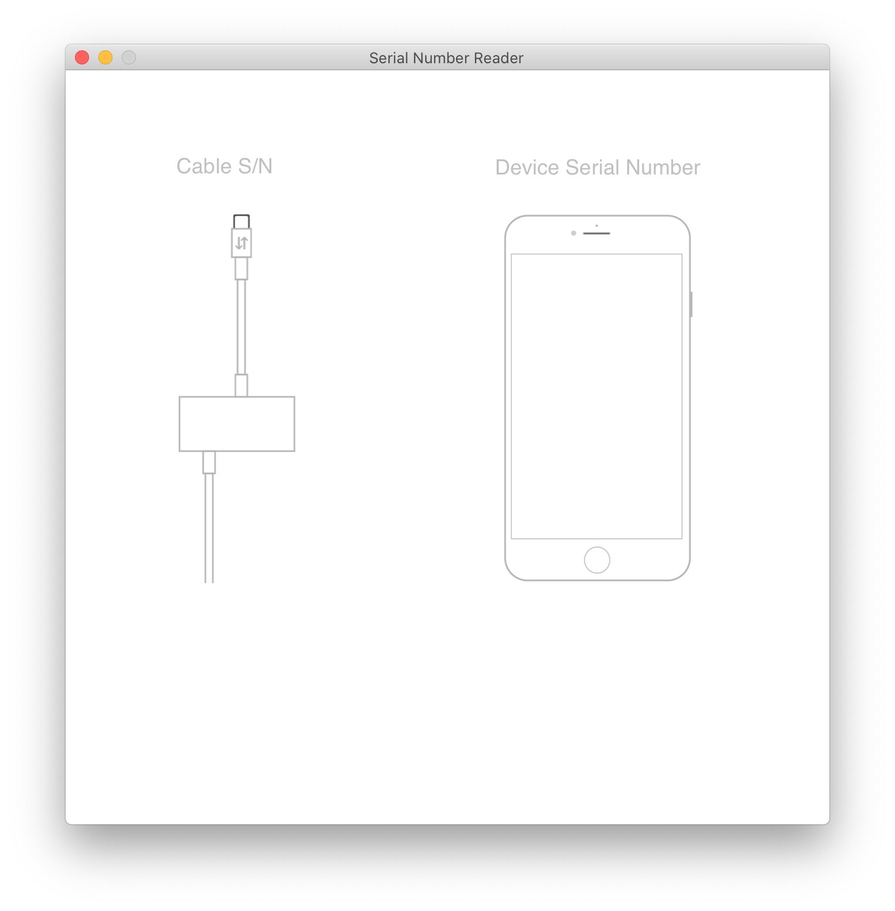
The things that are happening on IDBUS while retrieving ESN were already documented by @spbdimka:
Example of Tristar CRAM exchange #appleinternal pic.twitter.com/x9ffWWTlAb
— Nazurbek Kamazov (@spbdimka) April 17, 2019
Provisioning
The procedure of "flashing" ESN to Tristar is called provisioning. Provisioning is done using diags on the device side and using EzLink on the host side and takes 3 stepsYou can check provisioning status using diags:
tristar --prov_stat
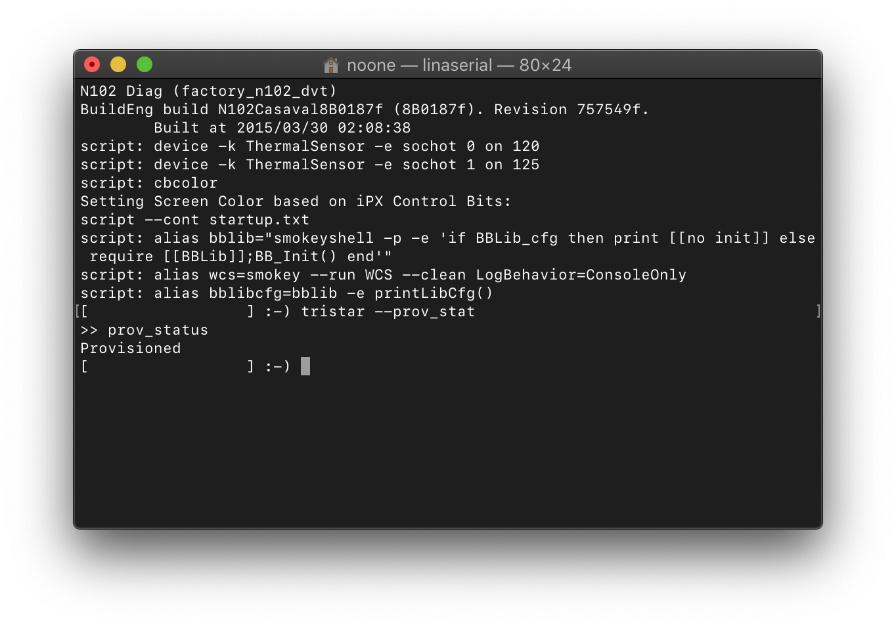...and retrieve ESN as well:
tristar --esn
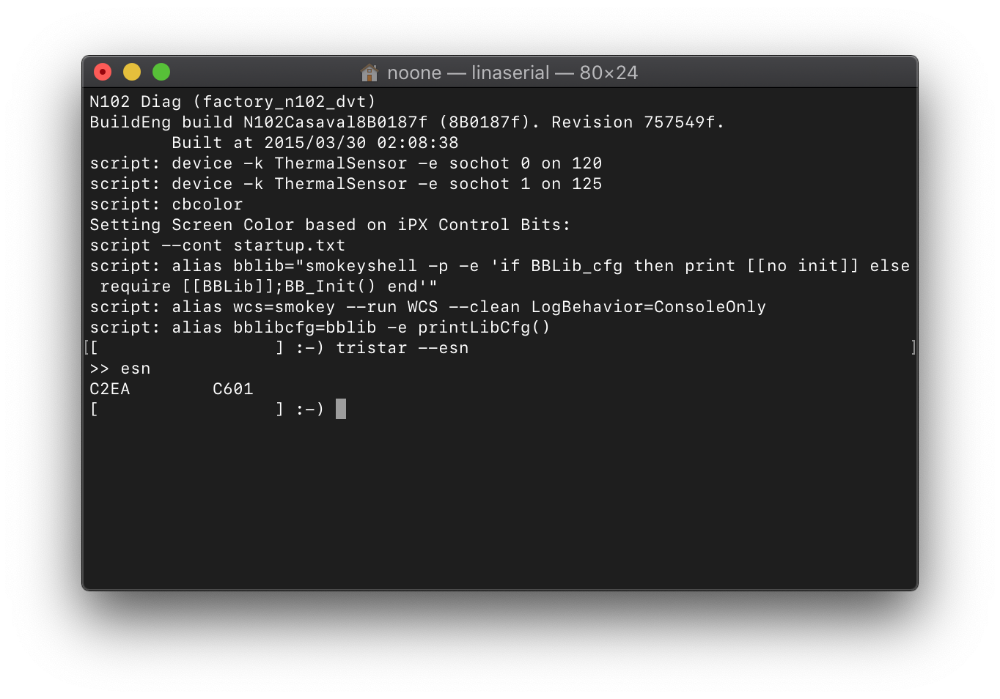By the way, diags generally has rich set of Tristar commands (available since iOS 7):
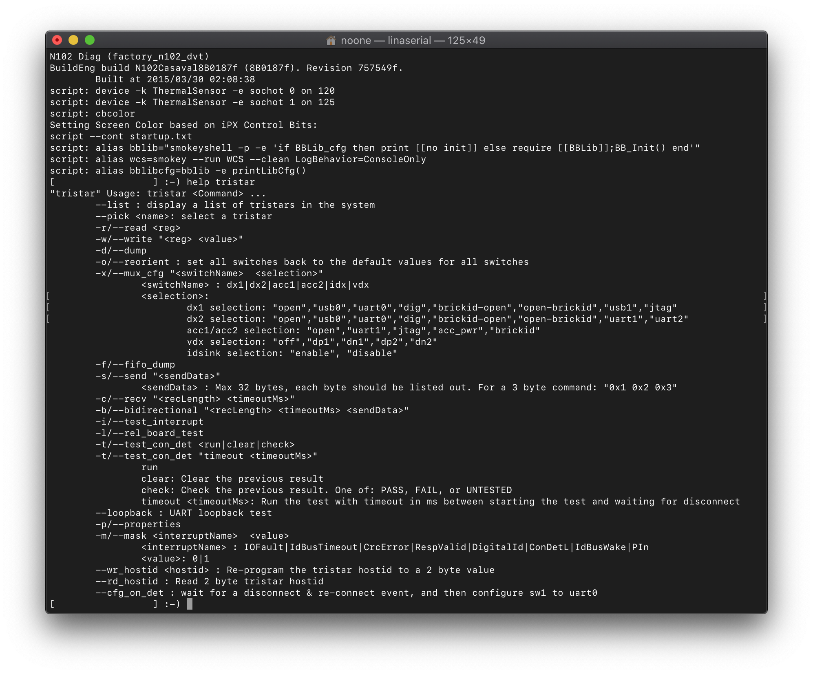
Tristar I2C
Tristar is available on I2C-bus (address 0x34 - for writing, 0x35 - for reading). That's how diags and kernel drivers communicate with itNot much is publicly known about the registers. A lot of information about register map itself can be obtained from the leaked iBoot source code (for THS7383 (appears to be backwards compatible with CBTL1608) and CBTL1610 only), but not much about what to write to them to achieve some interesting results
Another source of knowledge is diags' Tristar module (easily extractable over SWD while it's running). For example, I did manage to reverse algorithms of reading provisioning state and ESN. I then implemented these as an addition to my iBoot payload, Lina:
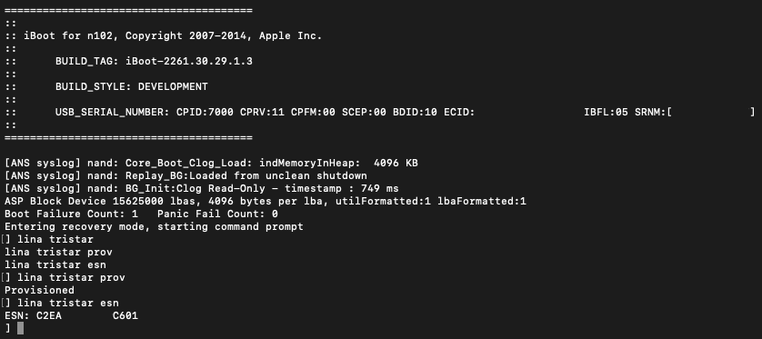
I tried to reverse ESN writing algorithm as well, but failed - the mechanism was too complex for my skills. The code snippets from Lina though are available here
Tristar electric characteristics
Tristar itself is powered up from a 1.8V source. Lines used for IDBUS are 3.0V-tolerant according to my oscilloscope: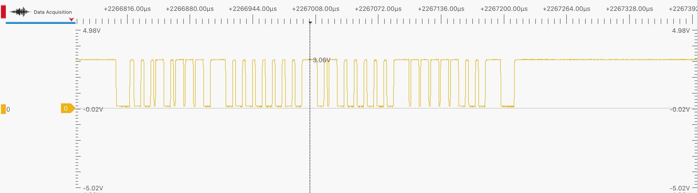
So, better do not try to interact with IDBUS with 5V-tolerant devices like certain models of Arduino without a level shifter